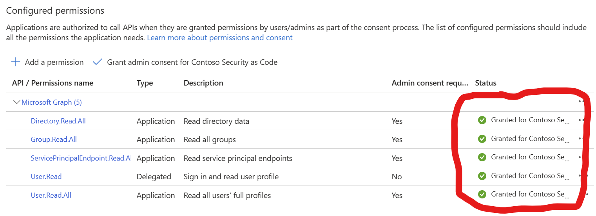
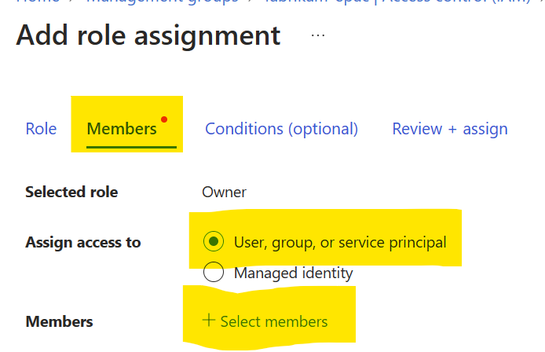
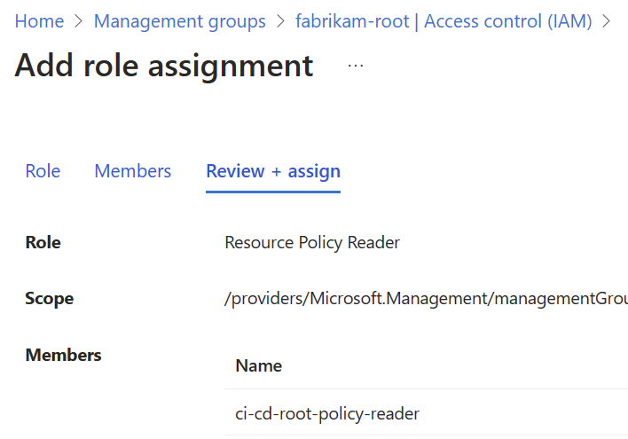

App Registrations Setup
CI/CD pipelines/workflows require the creation of App Registrations in your Entra ID (Azure AD) tenants. The App Registrations are used by the EPAC pipeline to deploy the EPAC Management Group and the EPAC Management Group Policy Definitions.
The following screenshot shows the Management Group hierarchy that used for the App Registrations.
Custom EPAC Resource Policy Reader Role
EPAC uses a set of Entra ID App Registrations (Service Principals). To build the deployment plan and adhere to the least-privilege-principle, a Resource Policy Reader role is required. This role is not built-in. EPAC contains script New-AzPolicyReaderRole to create this role or you can use the below JSON in Azure Portal.
{
"properties": {
"roleName": "EPAC Resource Policy Reader",
"description": "Provides read access to all Policy resources for the purpose of planning the EPAC deployments.",
"assignableScopes": [
"/"
],
"permissions": [
{
"actions": [
"Microsoft.Authorization/policyassignments/read",
"Microsoft.Authorization/policydefinitions/read",
"Microsoft.Authorization/policyexemptions/read",
"Microsoft.Authorization/policysetdefinitions/read",
"Microsoft.Authorization/roleAssignments/read",
"Microsoft.PolicyInsights/*",
"Microsoft.Management/register/action",
"Microsoft.Management/managementGroups/read"
],
"notActions": [],
"dataActions": [],
"notDataActions": []
}
]
}
}
Create single App Registration and Role assignments for epac-dev
Create the App Registrations for:
- epac-dev environment with Owner rights to the epac-dev Management Group
- Optional: epac-test environment with Owner rights to the epac-test Management Group (repeat the steps below for epac-test)
Create the App Registration for epac-dev environment

Grant the App Registration the necessary Microsoft Graph permissions



Grant the App Registration the necessary Azure Owner permissions for the epac Management Group





Create App Registrations and Role assignments for prod environments (per tenant)
App Registration with permissions to read Policy resources and Azure roles
Create the App Registration the same as above with the same Microsoft Graph permissions
Create custom Azure role with permissions to read Policy resources


Grant the App Registration the custom Azure role at the root Management Group

App Registration with permissions to deploy Policy resources
Create the App Registration without Microsoft Graph permissions

Grant the App Registration the ResourcePolicy Contributor role at the root Management Group


App Registration with permissions to assign Roles at root Management Group
Create the App Registration the same as above with the same Microsoft Graph permissions
Grant the App Registration the User Access Administrator role at the root Management Group